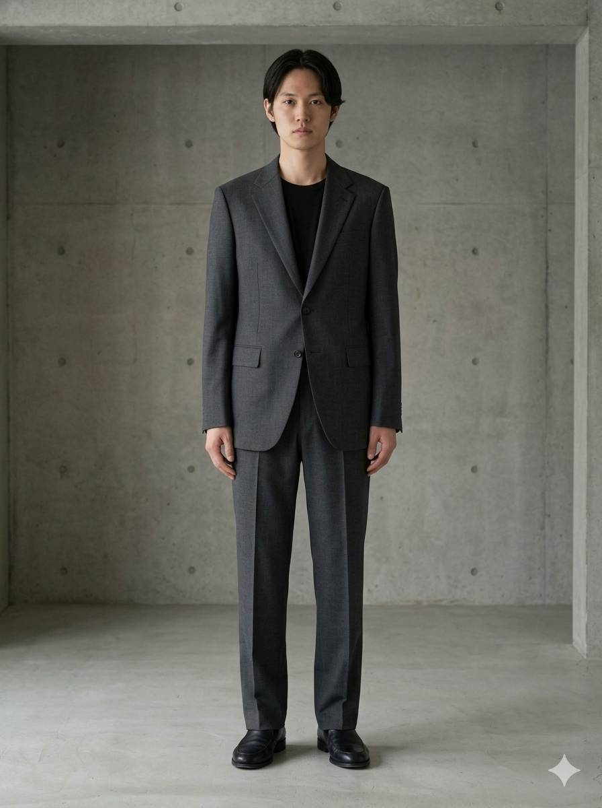

Silent
Order.
流行を追うのではなく, 装着者の本質を際立たせる「器」としての衣服。
유행을 좇는 것이 아닌, 착용자의 본질을 드러내는 '그릇'으로서의 의복을 제안합니다.

01 / Problem & Goal
一般的なコマースの騒音から離れ、
ギャラリーのような静寂を取り戻す。
기존의 패션 이커머스는 수많은 팝업과 배너로 인해 브랜드 특유의 미니멀한 정체성을 훼손하고 있었습니다. 우리의 목표는 단순한 '구매 채널'이 아니라, 착용자의 본질을 담는 그릇(Vessel)으로서 옷의 철학을 전달하는 '정온한 갤러리'를 웹상에 구축하는 것이었습니다.
02 / Aesthetic Logic


Textural Narrative / Wool 100%
The Architecture of Fabric
패션은 신체를 위한 가장 작은 건축입니다. 우리는 도쿄의 미니멀리즘에서 영감을 받아, 불필요한 장식을 배제한 '정적 질서(Silent Order)'를 설계했습니다. 웹사이트 또한 이러한 의복의 구조를 닮아, 수직과 수평의 엄격한 그리드 속에서 직조되었습니다.
03 / Architecture
THE LOGIC OF 'VESSEL' (器)
情報のハイエラルキーを再構築し、視覚的疲労を最小化。
세탁 기호(Care Guide)나 사이즈 표(Size Chart)와 같은 정보성 데이터는 디자인의 무드를 해치지 않도록 아코디언 인터랙션이나 여백 속으로 우아하게 숨겼습니다. 정보의 하이어라키를 철저히 통제하여 구매 여정의 피로도를 낮췄습니다.
04 / Digital Craft
触れられない布地の質感を、
コードのディテールで表現する。
- CSS GRID EDITORIAL 단조로운 상품 나열을 피하기 위해 CSS Grid를 활용한 비대칭 에디토리얼 레이아웃(3:7 비율)을 설계하여 마치 하이엔드 패션 잡지를 넘기는 듯한 경험을 제공합니다.
- MICRO INTERACTION 원단의 디테일을 보여주는 이미지에 마우스 오버 시, 시야를 방해하지 않는 선에서 아주 느리고 부드러운 스케일업(Scale-up) 애니메이션을 적용해 시각적 촉각을 자극했습니다.
- TYPOGRAPHY CONTROL 일본어와 한국어, 영문 혼용 시 발생하는 자간의 불균형을 CSS 클래스 분리(`.jp`, `.kr`, `.en`)를 통해 픽셀 단위로 교정하여 완벽한 정렬을 유지했습니다.
05 / Reflection
ブランドの哲学に共感する「真の顧客」の滞在時間が増加。
결과적으로 과도한 구매 유도 버튼을 없앴음에도 불구하고, 브랜드의 가치에 깊이 공감하는 고객층의 체류 시간과 진성 문의가 크게 증가했습니다. 웹사이트가 단순히 옷을 파는 곳이 아니라 '가치를 큐레이션 하는 공간'으로 기능할 수 있음을 증명한 프로젝트입니다.
TOKIMO / PHYSICAL ARCHIVE 002
ウェブ上の余白は、実際の織物の規則的な間隔からインスピレーションを得ました。
The white space on the web was inspired by the regular intervals of actual woven fabric.
우리의 디지털 설계는 언제나 현실에 존재하는 사물의 질감과 질서(Order)에서 출발합니다.
Space & Object
服のシルエットを空間に拡張します。
Start a Conversation →